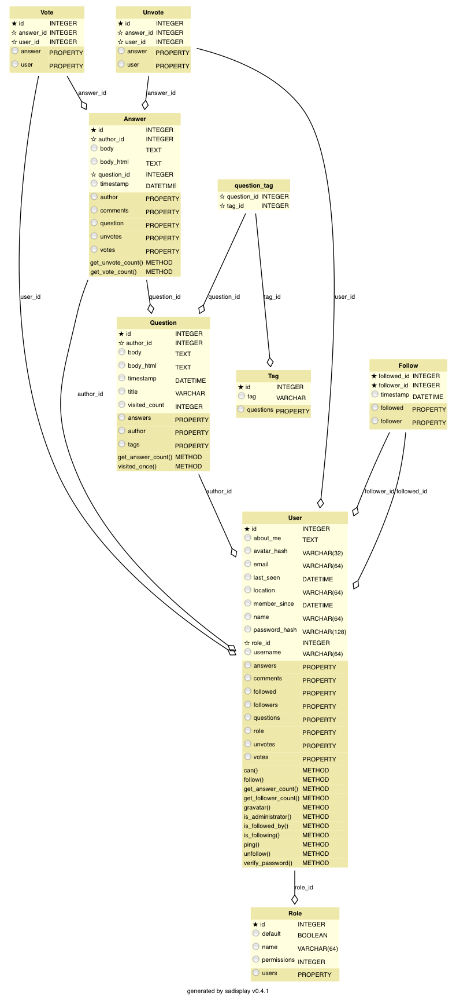

后端：
插件：
前端：
插件：
├── ENV - python环境
├── app - 应用文件夹
│ ├── auth - 管用户注册登录的app
│ ├── main - 主app
│ ├── static - 放静态文件,css,js,image
│ ├── templates - 放jinja2模板
│ │ └── auth
│ └── models.py - 数据库模型
├── doc - sphinx文档文件夹
├── migrations - 做数据库版本控制的
│ └── versions
├── requirements - 运行需要的python包
├── search.db - whoosh那个搜索库需要的数据库文件
│ ├── Post
│ ├── Question
│ └── Tag
├── config.py - 配置文件
└── tests - 测试都放这里
views.py - 控制路由，处理主要逻辑的文件
forms.py - 表单类文件
对象关系映射（英语：Object Relational Mapping，简称ORM，或O/RM，或O/R mapping），是一种程序设计技术，用于实现面向对象编程语言里不同类型系统的数据之间的转换。从效果上说，它其实是创建了一个可在编程语言里使用的“虚拟对象数据库”。
这里使用sqlalchemy 作为 Object Relational 映射器。
由 sadisplay 生成，变量函数名足够解释自身的功能。。。。
在视图函数处理完后统一调用，负责记录下响应过慢的 query
发布问题
删除一个问题
编辑问题
编辑个人信息
admin编辑个人信息
关注一个人
首页的。。。没必要注释吧
问题页面
搜索问题
为了在测试完后关掉服务器
显示全部问题
显示关注的人的问题
取关一个人
给回答投反对票
用户个人主页
给回答投赞成票